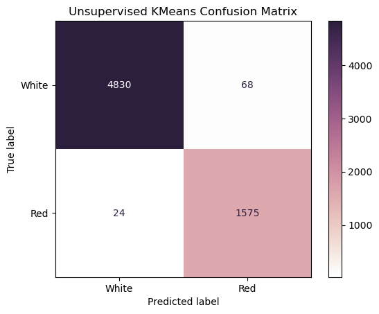

Wine physicochemical properties Info
Fixed Acidity- The measure of tartaric acid in the wines, measured in grams per Liter (g/L, reported at the CVRVV as grams per cubic decimeter). Tartaric acid contributes both to the chemical stability of the wine and flavor profile. For red and white wines, the CVRVV sets a minimum of 4.5 g/L.
Volatile Acidity- The measure of acetic acid in the wines, measured in g/L. Acetic acid is responsible for how much of a vinegar taste exists in the wine. The CVRVV sets a maximum of 1.20 g/L for red wines and 1.08 g/L for white wines.
Citric Acid- The measure of citric acid in the wines, measured in g/L. While not naturally occuring in grapes in large amounts, citric acid is the familiar taste of citrus fruits (e.g. oranges) and allowed as an additive for removal of iron and copper. A maximum of 1.00 g/L for both red and white wines is set by the CVRVV.
Residual Sugar- A measure of the amount of sugar left over after the fermentation process, measured in g/L. Typically a mix primarily of glucose and fructose, but the specific lab test conducted by the CVRVV lab is unknown. There are no minimum or maximuml limits set by the CVRVV.
Chlorides- The measure of sodium chloride, salt, in the wine, measured in g/L. The maximum limits set by the CVRVV are 1 g/L for both red and white wines.
Free and Total Sulfur Dioxide- Measures of the amount of sulfur dioxide in the wine, measured in milligrams per Liter (mg/L, 1000 mg/L is 1 g/L). Used as a chemical stabilizer, free sulfur dioxide refers to sulfur dioxide existing in its sole molecular form whereas total sulfur dioxide further includes sulfur dioxide that has been chemically bound to other molecules. The maximimum limits set by the CVRVV vary depending on the amount of sugar in the wine.
Density- The density of the wine, measured in grams per milliliter (g/mL). Plain water has a density of about 1 g/mL, and alcohol (ethanol) has a density just under 0.8 g/mL.
pH- The pH of the wine, measured on the unitless pH scale. Nominally ranging from 0-14, a neutral pH is about 7, such as water, and acidic solutions are less than 7.
Sulphates- A measure of potassium sulphates in the wine (potentially potassium metabisulphite) in g/L. Primarily used as chemical stabilizers, the CVRVV sets upper limits of 2 g/L for red and white wines.
Alcohol- The measure of alcohol in the wine, expressed as a percentage of volume. For red and white wines, the CVRVV sets a minimum total alcohol of 8% and maximum total alcohol of 14%.
Quality- Blind taste tests were performed by professional wine makers and tasters. The rating was a scale from 0-10, with 0 being "very bad" and 10 being "excellent". Each wine was taste-tested by at least 3 people and the median of the scores was taken as the quality.
Distributions of physicochemical properties of the Red variants of the Portuguese "Vinho Verde" wine

Distributions of physicochemical properties of the White variants of the Portuguese "Vinho Verde" wine


Scatter plot #1

Scatter plot #2

Scatter plot #3

Unsupervised Kmeans confusion matrix 